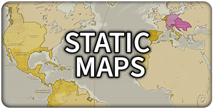

Home page
Map Portfolio
Data Visualizations
Web Maps
Contact
Static Map Portfolio
This page is an index of the maps I have authored in my learning, work, freelance, and hobbyist

Map of the Spanish Empire, showing all its holdings, including those of the Austrian Hasburgs.
Produced in ArcGIS and Adobe Illustrator. Data Sourced from Natural Earth. Hillshade from Esri
Map of the Spanish Empire, showing all its holdings, including those of the Austrian Hasburgs.
Produced in ArcGIS and Adobe Illustrator. Data Sourced from Natural Earth. Hillshade from Esri
Map of the Spanish Empire, showing all its holdings, including those of the Austrian Hasburgs.
Produced in ArcGIS and Adobe Illustrator. Data Sourced from Natural Earth. Hillshade from Esri
Map of the Spanish Empire, showing all its holdings, including those of the Austrian Hasburgs.
Produced in ArcGIS and Adobe Illustrator. Data Sourced from Natural Earth. Hillshade from Esri